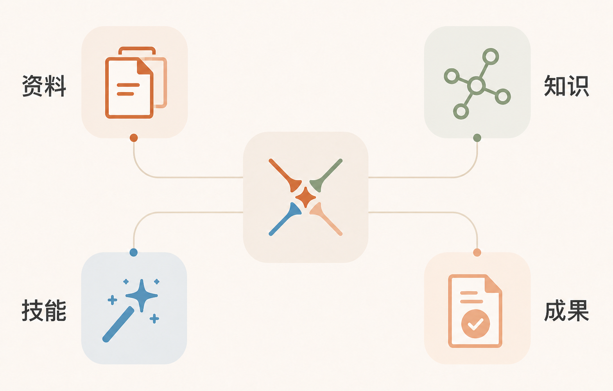
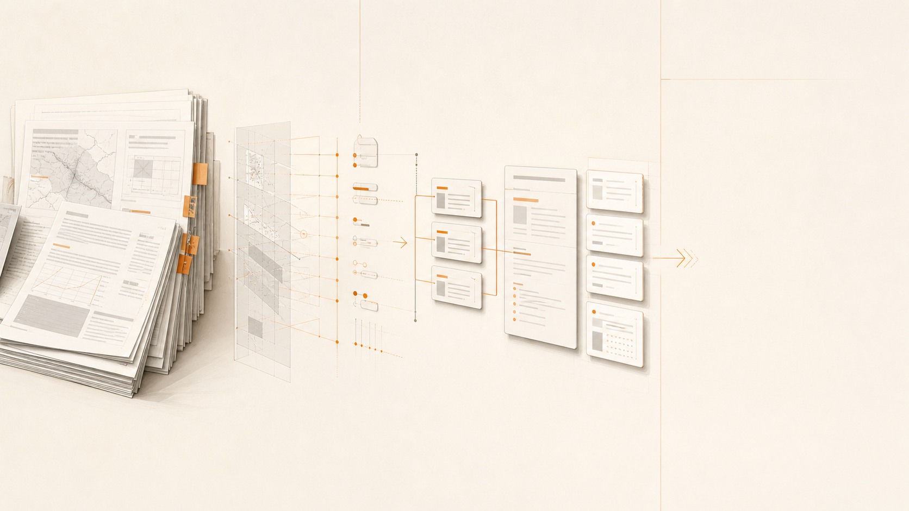
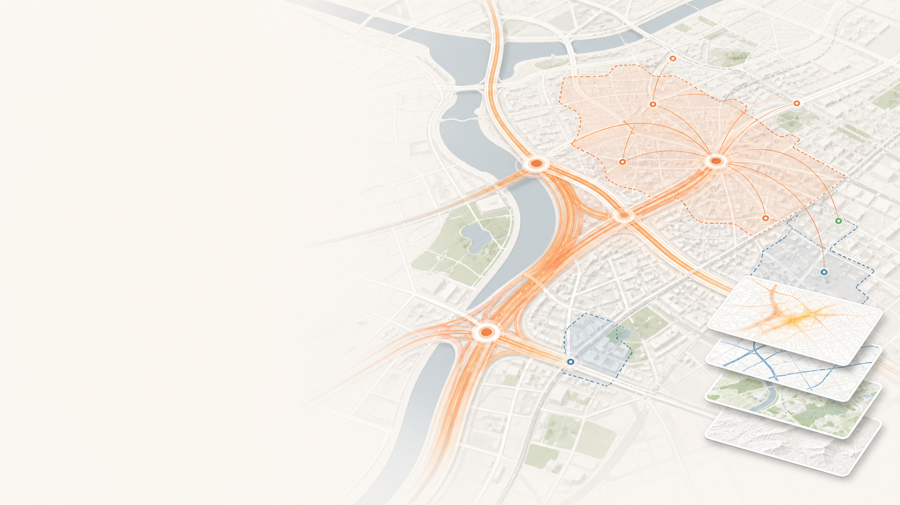
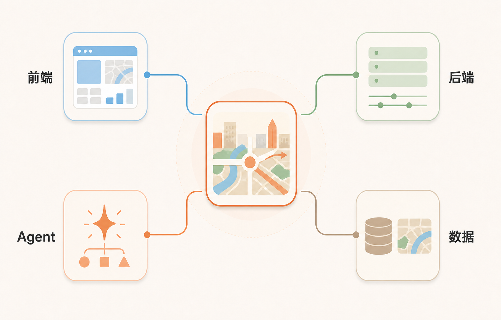

总览通用规范00_总览通用规范.md
Markdown · 可滚动查看Open Plan · 规聚项目介绍 · 2026
01 / 25交通规划 · AI 工作台规划工作，
规划工作，
聚到一起
一个连接资料、知识、技能、地图与成果的完整工作空间。
规聚助手待提交
请基于当前资料，形成一份交通规划报告框架。
自动循环演示 · 点击可重播
读取当前工作区与项目资料
解析文本标签与关联关系
检索知识库和规划模板
调用 Agent 组织报告框架
返回可继续编辑的成果
25 页 · 暖白展示版可替换视频 / 图片素材
项目介绍ROUTE · 02 / 25
先讲清楚主线
从最基本的规划工作流程出发
从“为什么做”出发，走到“怎么用、怎么扩展、为什么值得继续建设”。
01 / WHY为什么做规划工作中真正消耗时间的环节。
02 / ANSWER解决什么把上下文、工具和成果连成闭环。
03 / HOW怎么实现工作区、Agent、知识库和 Skills。
04 / WHAT有哪些功能按模块逐页看实际能力。
建议讲述节奏：问题 25% · 方案 20% · 功能 45% · 价值 10%。
第一部分 · 背景WHY · 03 / 25
为什么要做规聚平台？因为规划工作
因为规划工作
本质上是一个复杂协作系统
它同时包含资料整理、规范遵循、专业分析、地图制图、报告写作、反复修改和成果交付。单个工具能解决一个环节，但很难承载完整过程。
01
资料很多
文件、表格、图层、历史项目和参考模板持续增加。
02
规则很多
行业规范、项目要求和个人工作习惯需要同时满足。
03
成果很多
最后要落到文档、图表、地图和可交付文件上。
第一部分 · 背景PAIN · 04 / 25
当前规划工作的痛点
真正耗时的，往往不是分析本身
而是找到资料、理解背景、反复搬运、检查格式，以及在多个工具之间保持一致。
01
资料分散
Word、Excel、PPT、地图和历史文件分散在不同目录与软件中，当前上下文很容易丢失。
02
知识难找
规范、模板和项目经验没有形成统一的检索与关联方式，很多信息依赖个人记忆。
03
重复劳动
同一份内容需要在文档、表格、图表、地图和汇报材料之间多次复制和调整。
04
成果难追踪
AI 的回答、工具的修改、最终文件和项目经验之间缺少连续的记录和恢复机制。
所以我们需要的不是又一个孤立工具，而是一个承载完整任务上下文的工作台。
第一部分 · 方案ANSWER · 05 / 25
规聚解决什么问题？
把“找资料、做分析、出成果”放进同一个闭环
01
把资料变成上下文工作区、当前文件、引用、规则和历史记忆共同进入任务。
02
把工具变成能力Office、知识库、地图、模板和 Skills 都可以被 Agent 调度。
03
把经验变成资产规范库、知识库和工作流可以持续复用，而不是每次重新开始。
04
把过程变成成果最终落到可查看、可修改、可导出、可继续编辑的文件。

资料 · 知识 · 技能 · 成果视频位：用一段总览录屏展示四类输入如何汇聚到同一个任务中。
前置说明 · 价值AI赋能 · 06 / 25
AI 如何赋能交通规划设计
把人工经验，变成可调用的规划能力
规划的核心价值不只在工具，更在知识。让沉睡在工程师电脑里的资料被看见、被理解、被复用，才能持续提升交付质量。
01
让资料被看见
把分散的文本、规范和历史项目纳入统一入口，AI 能快速找到需要的内容。
02
让经验被复用
通过标签、关联、模板和工作流，把个人经验变成团队可以调用的能力。
03
让交付更稳定
让 Agent 在正确的知识和规范基础上工作，减少遗漏，提升内容质量与一致性。
资料 · 知识 · 规划成果
前置说明 · 价值知识资产 · 07 / 25
规划的核心资产和价值
规划真正的价值，沉淀在知识库里
从个人电脑里的文件，走向团队可调用的知识体系
01
从孤立文本到标签体系给每一份资料梳理标签，建立统一的知识入口。
02
从标签到内容关联让相关规划文本、项目经验和规范彼此连起来。
03
从存档到持续调用后期可以检索关联程度，让知识直接参与当前任务。
知识图谱 · 知识库切换
首要解决的问题：如何构建知识库，以及如何让知识真正被 Agent 运用起来。
前置说明 · 标准规范蒸馏 · 08 / 25
规划文本的格式化与标准化
把规范要求，蒸馏成 Agent 能理解的标准
规划文本的结构、格式和表达要求高度清晰。我们总结大量规划文本，把可复用的经验沉淀成 Agent 能执行的内容标准。
01 · 框架
先知道写什么
章节结构、内容顺序和成果边界。
02 · 模板
再知道怎么写
沉淀不同规划类型的可复用骨架。
03 · 格式
保证交付规范
标题层级、版式、表格和图文关系。
04 · 语气与标点
细到表达习惯
让文字更符合规划文本的专业语气。

原始文本 → 规范框架 → 可复用模板前置说明 · 协同轻量协同 · 09 / 25
轻量化的一站式工作台
接入现有生态，把规划工作串成一条线
规聚不要求替换已有工具，可以和院里的 AVA 平台、市面上的 WorkBuddy、Trae 等工具结合，成为规划工程师的一站式工作台。
 报告 · 地图 · 数据 · Agent
报告 · 地图 · 数据 · Agent01
写报告调用知识、规范和模板，形成可继续编辑的文本成果。
02
审阅材料检查结构、格式、术语、逻辑和交付规范。
03
数据分析与可视化处理表格、OD、客流数据，输出图表与分析结论。
04
地图与出图完成专题地图、规划表达和汇报素材制作。
目标不是增加一个孤立入口，而是让资料、规则、技能和成果在同一个任务里流动起来。
第二部分 · 方法PRODUCT · 10 / 25
平台整体形态
一个主工作台，连接四个专业空间

01工作区与文件
02技能 · 智能体 · 知识库 · 模板库 · 地图
03文档 / 报告编辑区
04智能体协作区
05任务输入与提交
这张图怎么讲
一张界面，串起六个模块
01工作区与文件管理项目、目录、历史会话与产物。
02专业入口切换技能、智能体、知识库、模板库和地图。
03文档编辑阅读、编写和继续修改规划材料。
04Agent 协作提交任务、查看过程并接收产物。
05上下文不断线文件、知识和对话在同一个工作区里流动。
用户可以在同一个任务里，从文件切换到知识库、地图和模板，不丢失上下文。
第二部分 · 方法PROCESS · 11 / 25
我们的实现流程
一次任务，经过六个连续步骤
从输入资料，到调用能力，再到形成可继续编辑的成果，每一步都能被看见、被理解、被恢复。
▶
完整工作流视频选择工作区 → 引用资料 → Agent 执行 → 成果回写01
选择工作区确定项目和文件范围。
02
建立会话保留本轮任务和历史上下文。
03
引用资料把文件、知识库或模板加入任务。
04
理解上下文读取规则、当前文件和项目记忆。
05
调用能力选择文档、知识、地图或技能工具。
06
形成成果返回结果，并保存文件和经验。
视频建议：完整展示一次从 OD 数据处理、分析到成果输出的连续过程。
第三部分 · 功能AGENT · 12 / 25
功能一 · AI Agent 协作
AI 不只回答问题，也能进入工作现场
✦
视频 / 图片位置建议素材：AI 对话流、工具调用、任务进度01
自然语言描述任务用户直接说目标，不必先理解复杂菜单。
02
上下文自动跟随当前文件、引用、规则和记忆进入同一个任务。
03
工具真正参与执行Agent 可以读取文档、搜索知识、修改地图和调用 Skills。
04
过程清晰可见思考、工具调用、询问和最终结果分层呈现。
讲解重点：它把“会聊天”升级为“能围绕项目完成任务”。
第三部分 · 功能OFFICE · 13 / 25
功能二 · Office 文档工作台
从打开文件，到直接形成成果
▤
视频 / 图片位置建议素材：Word、PPT、Excel 预览和修改01
多格式统一查看Word、PPT、Excel、Markdown、HTML 等在同一工作区打开。
02
批注和修订可定位批注面板、段落高亮、目录和文档结构都能直接查看。
03
表格可以继续编辑多 Sheet 查看和单元格修改后写回文件。
04
Agent 协同修改读、查、改、预览形成完整文档闭环。
演示建议：打开一份报告，问 Agent“当前文件有哪些章节缺失？”
前置说明 · 模板库素材库 · 14 / 25
功能四 · 规划素材库
总结形成了14个规划所涉及的通用模板
把常用规划文本的框架、章节、格式和表达要求，整理成可复用、可检索、可被 Agent 调用的模板资产。
点击左侧模板即可切换查看；内容已内嵌到汇报HTML中，离线打开也可以浏览14份 Markdown 文件。
第三部分 · 功能TEMPLATES · 15 / 25
功能三 · 规范库与模板库
把“怎么写、怎么排、怎么做”提前准备好
规范库提供结构和方法，模板库提供可以直接参考的成果样式。
交通规划素材库 · 14 份年度工作报告、五年规划、条文式规划、工可、线位论证、选址预审、交评、汇报材料等。
OpenDesign HTML PPT106 个有效首页模板，支持预览、筛选和新窗口打开。
办公和研究模板公文、报告、论文、会议通知、调研问卷、图表和地图等。
模板进入对话单个模板或模板目录都可以 @ 到对话，成为写作参考。
模板库 · 技能广场 · 智能体
视频位：模板筛选 → 预览 → @模板 → Agent 生成成果。
第三部分 · 功能KNOWLEDGE · 16 / 25
功能四 · 知识库与知识图谱
从“我记得有一篇”，变成“它就在这里”
让历史项目、规范和经验，重新参与今天的工作。
01
多根目录管理添加、切换和维护不同知识来源。
02
搜索与索引按标题、标签、正文和关系快速定位。
03
图谱、反链和相似内容看到文档之间的关系，回到原文继续阅读。
04
@ 到对话把文档或目录交给 Agent 做分析。
知识图谱 · 知识库切换
也支持 IMA 云端知识库，形成“本地资料 + 云端资料”的统一入口。
第三部分 · 功能SKILLS · 17 / 25
功能五 · Skills 技能体系
把一次性提示词，沉淀成长期可复用的能力
技能分类
交通规划TRAFFIC
文档报告DOC
图表可视化CHART
图像与媒体IMAGE / MEDIA
Office 办公OFFICE
开发与研究DEV / RESEARCH
交通规划文档报告图表可视化图像生成Office 办公搜索研究OD 数据分析地图可视化公文排版文字审校PPT 生成PDF 输出
技能管理支持搜索、分类、@调用、导入和导出。办公模式和开发模式可以使用不同的技能组合。
视频位：技能广场分类 → 搜索 → 调用 → 返回对话。
第三部分 · 功能WORKFLOWS · 18 / 25
功能六 · 技能集合工作流
从“会用技能”，到“一键启动专业流程”
工作流 01
规划报告全流程
从调研到成稿，再到图表和 PDF 输出。
研究报告图表排版
工作流 02
OD 数据分析工作台
导入、校验、统计、可视化和报告汇总。
OD数据地图报告
工作流 03
公交规划专项
现状分析、方案、配图和汇报材料。
公交图表地图汇报
工作流 04
汇报材料速成
简报、PPT、配图和演示结构一次组织。
简报PPT配图汇报
工作流把多个 Skills、角色要求和执行顺序组合起来，降低重复配置成本。
第三部分 · 功能AGENT MARKET · 19 / 25
功能七 · 智能体广场
把通用 Agent 变成不同岗位的工作伙伴
01 · 公文报告
公文报告编制助手
按公文版面规范撰写、修订和输出规范 docx。
公文 · 规划 · 汇报02 · 地图可视化
地图可视化助手
生成 OD 期望线、站点、热力和等时圈等专题地图。
地图 · OD · 专题图03 · 文本审查
文本审查助手
检查错别字、语病、格式、术语和逻辑结构。
审校 · 规范 · 建议04 · 数据分析
数据分析及可视化助手
处理 Excel、OD 和客流数据，生成图表与分析结论。
数据 · 图表 · 结论文本审查 · 打开并编辑
第三部分 · 功能MEMORY · 20 / 25
功能八 · 规则、记忆与上下文
让 Agent 知道“这个项目应该怎样工作”
项目工作区
├── AGENT.MD · 项目准则
├── .agent-context.md · 当前上下文
└── memory/ · 长期经验
├── 项目信息
├── 用户偏好
└── 经验教训
项目规则文件命名、坐标范围、数据校验和工作流程。
动态上下文当前工作区、当前文件、引用和本轮任务状态。
长期记忆项目背景、用户偏好和已经验证过的经验。
自动更新经验可以由 Agent 沉淀，前端通过变更提示及时刷新。
 规则 · 上下文 · 长期记忆
规则 · 上下文 · 长期记忆平台因此能从“通用对话”逐步变成“懂项目的协作伙伴”。
第三部分 · 功能GIS · 21 / 25
功能九 · GIS 地图工作台
地图不只是展示，而是分析和出图的工作台

路网 · OD · 分析区 · 图层图层管理显隐、排序、颜色、线宽和分组。
属性表字段、搜索、排序、分页和 CSV。
空间工具测距、测面、标绘点线面。
分析能力等时圈、路径规划、OD 热力。
数据导入GeoJSON、SHP 和批量图层。
报告出图图例、比例尺、指北针和 PNG。
地图能力把交通数据分析和规划成果表达放到了一起。
第三部分 · 功能ANALYSIS · 22 / 25
功能十 · 已跑通案例参考
三个已经跑通的案例，说明平台可以继续向前走
从公交数据处理、地图可视化，到跨区域 OD 分析，案例说明“数据—分析—表达”的工作链已经能够闭环。
案例一 · 公交数据
数据处理与可视化展示案例二 · 地图专题
热力图与空间分析案例三 · OD 分析
跨区域出行关系分析这些案例不是终点，而是后续继续蒸馏经验、沉淀技能和扩展 Agent 的参考样本。
第三部分 · 功能CONTROL · 23 / 25
功能十一 · 会话、工作区与命令面板
把项目状态也纳入长期工作流
可恢复的工作状态
工作区、当前文件、会话、引用、打开的文档 Tab 和界面模式，都可以被持续保存和恢复。
视频 / 图片位置
会话历史新建 · 恢复 · 重命名让一次任务可以继续，而不是每次从头开始。
工作区隔离项目之间不串上下文切换项目时重新建立对应会话。
结构化引用文件 · 目录 · 知识 · 模板多种资料可以一次加入任务。
命令面板Ctrl / Cmd + K跨文件、知识、模板、地图和会话搜索。
界面状态刷新后继续工作文档 Tab、模式和最后会话可以恢复。
安全边界本地工作区保护路径校验和 Office 操作边界更清晰。
这部分让平台从“功能集合”变成可以长期使用的项目操作系统。
第四部分 · 体系ARCHITECTURE · 24 / 25
技术架构
前端是工作台，后端是控制面，Agent 是执行层

前端 · 后端 · Agent · 数据前端React、文档渲染、知识图谱、地图和模板交互。
后端Node.js + Express，管理文件、会话、知识和地图 API。
AgentPi SDK 会话、流式事件，以及 Office、KB、Map 工具。
数据本地工作区、JSONL 会话、Markdown 索引、GeoJSON 和瓦片。
技术架构的核心，是让每种专业能力都能按照任务上下文被调用。
第五部分 · 收束TAKEAWAY · 25 / 25
PROJECT TAKEAWAY
从项目工作台
走向规划知识基础设施
走向规划知识基础设施
规聚的下一阶段，不是重新做一个更大的软件，而是围绕真实案例持续做加法，让知识、插件和 Agent 越用越强。
01进一步蒸馏优秀案例经验把已跑通的工作链转成模板、技能和可复用方法。
02做加法，而不是重构优先做插件和能力接入，而不是重新做一个孤立软件。
03构建规划院知识体系把规范、项目、案例、方法和经验连接成院级资产。
04商业化拓展协助外部单位拓展各行各业的聚合 Agent。
← → 翻页 · ESC 目录 · B 静态
Open Plan · 汇报目录